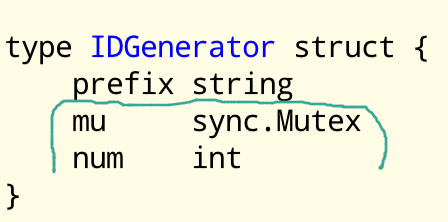

Interleaving
Goroutines interleave with each other.
1var c int 2funcmain () { 3 var wg sync.WaitGroup 4 wg.Go(count) 5 wg.Go(count) 6 wg.Wait() 7 fmt.Println(c) 8} 9funccount () { 10 for range 20_000 { 11 c++ 12 } 13}
27357
Goroutines interleave with each other.
1var c int 2funcmain () { 3 var wg sync.WaitGroup 4 wg.Go(count) 5 wg.Go(count) 6 wg.Wait() 7 fmt.Println(c) 8} 9funccount () { 10 for range 20_000 { 11 c++ 12 } 13}
27357
A data race happens when:
same goroutine
1c++ 2fmt.Println(c)
different memory
1wg.Go(func() { 2 c1++ 3}) 4wg.Go(func() { 5 c2++ 6})
no writes
1wg.Go(func() { 2 fmt.Println(c) 3}) 4wg.Go(func() { 5 fmt.Println(c) 6})
data race
1wg.Go(func() { c++ }) 2wg.Go(func() { c++ })
1var c int 2funcmain () { 3 var wg sync.WaitGroup 4 wg.Go(count) 5 wg.Go(count) 6 wg.Wait() 7 fmt.Println(c) 8} 9funccount () { 10 for range 20_000 { 11 c++ 12 } 13}
27357
go run -race .
================== WARNING: DATA RACE Read at 0x000000612e58 by goroutine 7: main.count() jba/repos/github.com/jba/concurrency-workshop/slides/mutexes/10/m.go:26 +0x2c sync.(*WaitGroup).Go.func1() jba/sdk/go1.25.5/src/sync/waitgroup.go:239 +0x5d Previous write at 0x000000612e58 by goroutine 8: main.count() jba/repos/github.com/jba/concurrency-workshop/slides/mutexes/10/m.go:26 +0x44 sync.(*WaitGroup).Go.func1() jba/sdk/go1.25.5/src/sync/waitgroup.go:239 +0x5d
1c++
is actually
1R0 = c 2R0++ 3c = R0
What we want:
| G1 | G2 |
|---|---|
| c++ | |
| c++ |
What we might get:
| G1 | G2 |
|---|---|
| R0 = c | R0 = c |
| R0++ | R0++ |
| c = R0 | c = R0 |
1import ( 2 "fmt" 3 "sync" 4) 5var mu sync.Mutex 6 7var c int 8funcmain () { 9 var wg sync.WaitGroup 10 wg.Go(count) 11 wg.Go(count) 12 wg.Wait() 13 fmt.Println(c) 14} 15funccount () { 16 for range 20_000 { 17 mu.Lock() 18 c++ 19 mu.Unlock() 20 } 21}
Only one goroutine between Lock and Unlock
The zero mutex is unlocked and ready to use
A mutex limits interleavings
1import ( 2 "fmt" 3 "sync" 4) 5typeIDGenerator struct { 6 prefix string 7 mu sync.Mutex 8 num int 9} 10funcNewIDGenerator (prefix string) *IDGenerator { 11 return &IDGenerator{prefix: prefix} 12} 13func (g *IDGenerator)NewID () string { 14 g.mu.Lock() 15 defer g.mu.Unlock() 16 g.num++ 17 return fmt.Sprintf("%s%d", g.prefix, g.num) 18}
1funcuse () { 2 g := NewIDGenerator("gopher-") 3 fmt.Println(g.NewID()) 4 fmt.Println(g.NewID()) 5}
TODO CHECK gopher-1 gopher-2
num must be synchronized to make NewID concurrency-safe
prefix is written before all calls to NewID
The "mutex hat" convention: declare the mutex field above the fields it protects

1import ( 2 "fmt" 3 "sync" 4) 5typeIDGenerator struct { 6 prefix string 7 mu sync.Mutex 8 num int 9} 10funcNewIDGenerator (prefix string) *IDGenerator { 11 return &IDGenerator{prefix: prefix} 12} 13func (g *IDGenerator)NewID () string { 14 g.mu.Lock() 15 g.num++ 16 g.mu.Unlock() 17 return fmt.Sprintf("%s%d", g.prefix, g.num) 18}
Keep locked regions (critical sections) small to avoid contention
defer is not always needed or useful
func (g *IDGenerator) NewID() string {
g.mu.Lock()
g.num++
n := g.num
g.mu.Unlock()
return fmt.Sprintf("%s%d", g.prefix, n)
}
1import ( 2 "fmt" 3 "sync/atomic" 4) 5typeIDGenerator struct { 6 prefix string 7 num atomic.Int64 8} 9funcNewIDGenerator (prefix string) *IDGenerator { 10 return &IDGenerator{prefix: prefix} 11} 12func (g *IDGenerator)NewID () string { 13 n := g.num.Add(1) 14 return fmt.Sprintf("%s%d", g.prefix, n) 15}
Limited operations
Do not combine
"These functions require great care to be used correctly."
Recommendation: use only for counters
If there are a lot more reads than writes
sync.Map (best for a single write per key)
sync.RWMutex